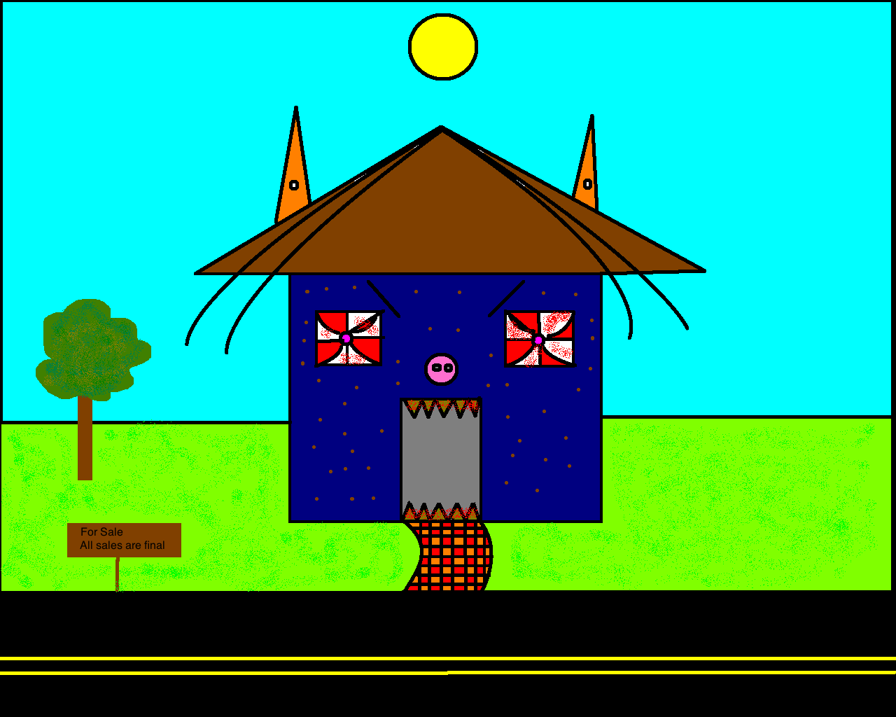
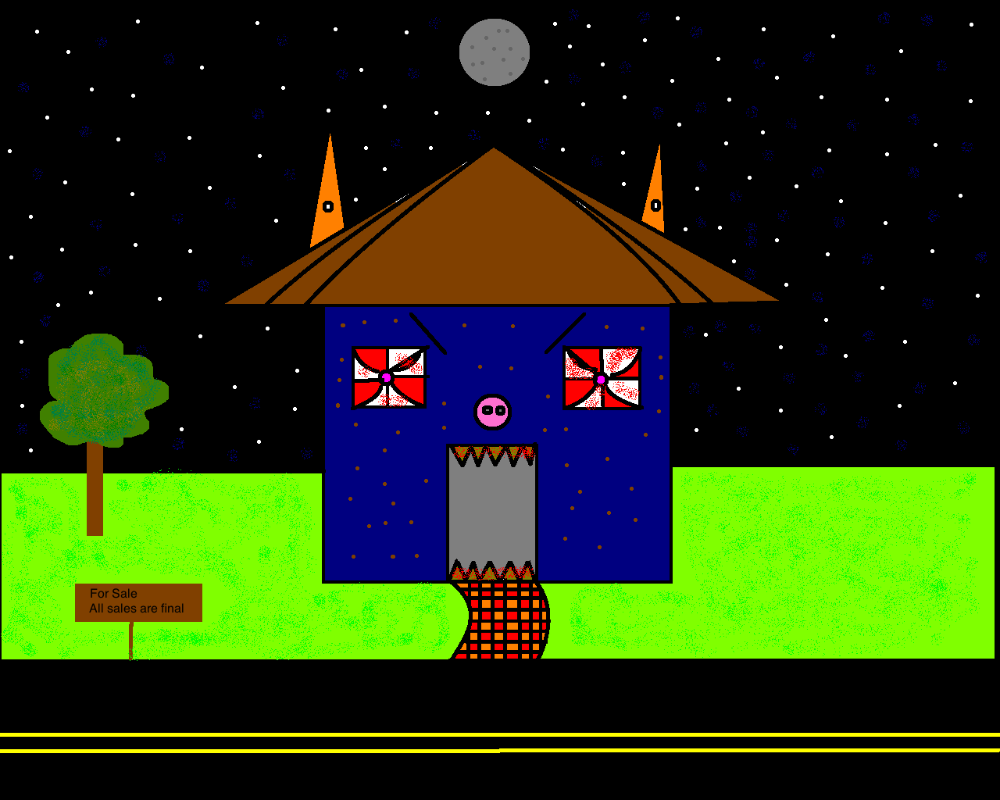

Here is the original version of my house.
My Sketches
The Rubric requires the insparation for this house so here it is.
the isnpartion is Nothing
HTML/CSS VS JS
I like JS more because it is closer to the other programing languages that i have used
P5/Paint brush, My paint brush house was deffinatly more detaled but all in all i thing that my P5 house looks beter.

